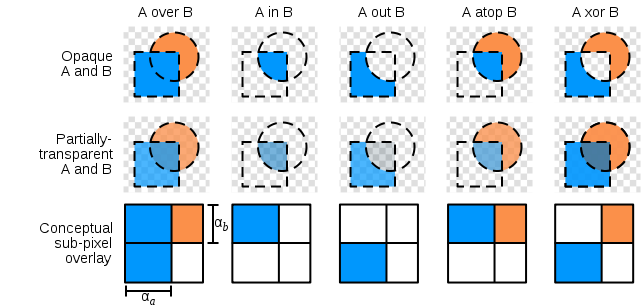

stark7
Hello - I am looking into creating a healthbar and while it was pretty straight forward to create a sprite and modifying it with scale, I would like a more fancy looking one and not necessarily linear.
To that end, what is the best way to have a sprite and then a mask over it that will only show the parts behind the mask. I am hoping for a solution where the mask is a node so I can move, scale and rotate at will.
From here, what I ideally need is the A in B version - although knowing how to do all of those would make for some really fancy visuals. Any ideas?



 .
.